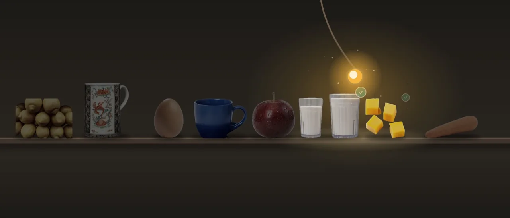

A small lamp for the back of the cupboard
· Sona Orbit

I buy milk when there's already milk. I find the cheese a week after it expired, behind the jam. I know I own AA batteries, I just don't know where. None of this is a big problem. It's a small one that happens every week.
So I made an app for it. It's called Stashlight (深藏 in Chinese), and it's on the App Store today.
A photo is the whole entry
I point the camera at something and tap once. The background comes off, and it goes on a shelf in the app: the fridge, the storage closet, the bookshelf, wherever it really lives. The date printed on the package is read for me to confirm, and I get a reminder a few days before it expires.
For things I buy all the time, like eggs and paper towels, there's a Quick List. I tick them instead of photographing them again.
The lamp
The mascot is an anglerfish called Lumi, after the little lamp on its head. In the app it's the search: I ask "what expires this week?" or "where are the batteries?" and it points at the shelf.
The home screen only shows what needs me today. What's running out, what to eat first. Everything else stays in the dark until I go looking.
Keepsakes too
Not everything at home is groceries. A cup from a trip, a gift from a friend. Those get photos, a date, a place and a few lines, and "On this day" brings them back to the home screen a year later.
A new name
The app was first called Deepstash. App Review sent it back: another app on the store already had that name, and mine looked too much like the crowd of home inventory apps. They were right on both. I renamed it Stashlight, after the lamp, and rewrote the store page around what is actually its own: the display wall, Lumi and the keepsakes. The second time it went through.
How it's set up
- No account. Everything stays on the iPhone, and can be exported as a CSV.
- Free with up to 3 places and a small banner ad. Pro removes the limit and the ads.
- AI is off by default. If you turn it on, Apple's built-in model runs on the phone, or you can use your own API key.
- Ten languages, including Traditional and Simplified Chinese, Japanese, Korean and Thai.
The website is at sona-orbit.github.io/deepstash, and the app is on the App Store.
This first went out as a thread on X: @SonaOrbit.